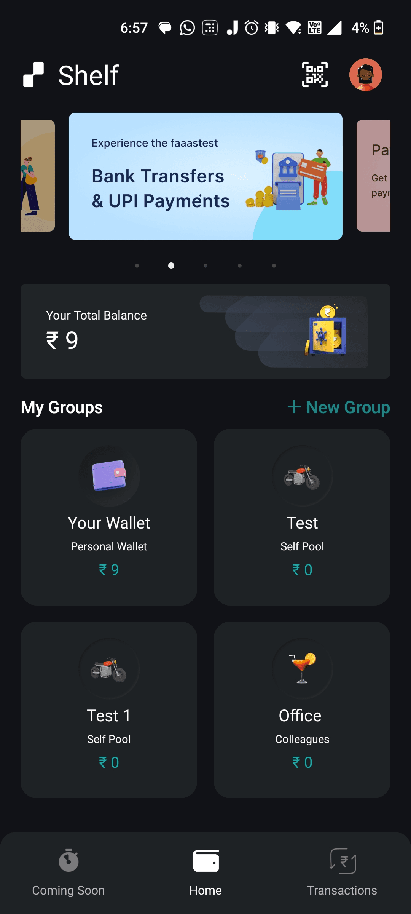
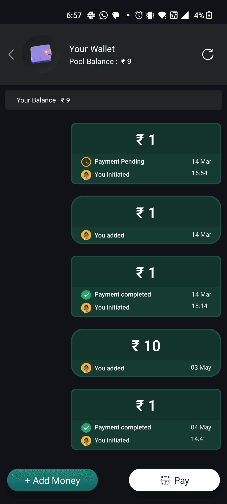
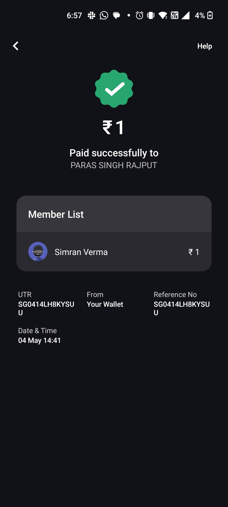
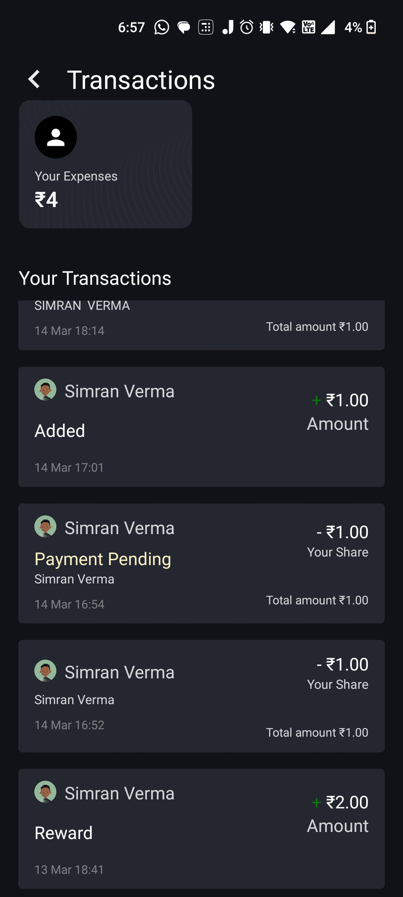
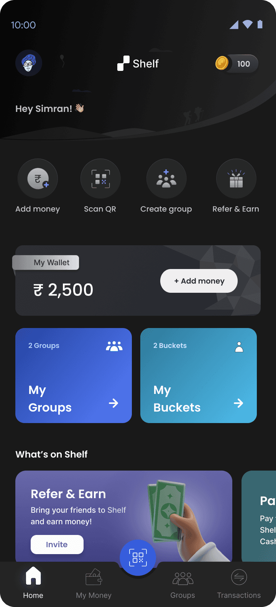
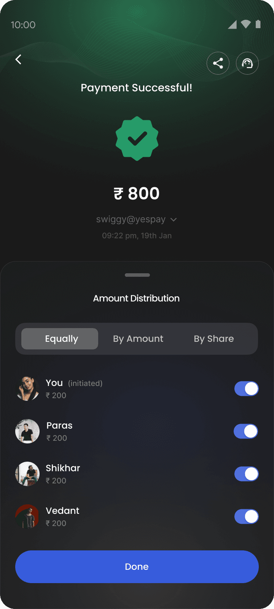
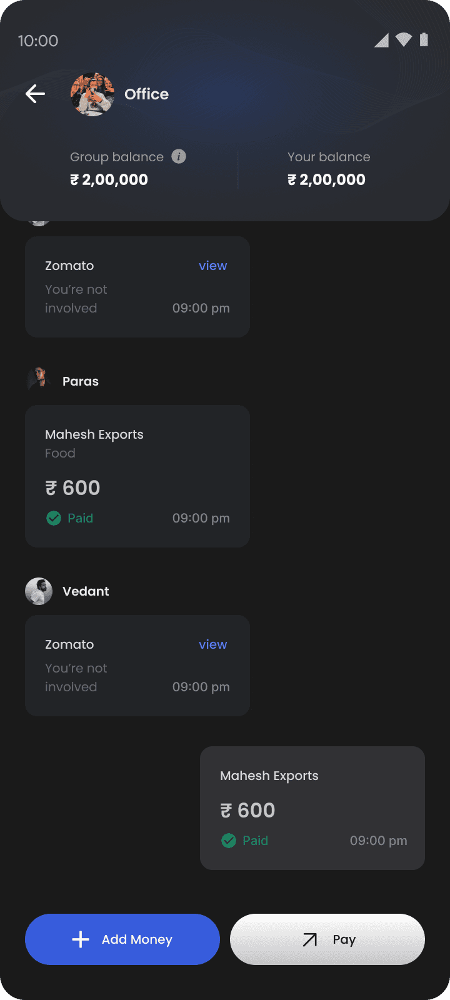
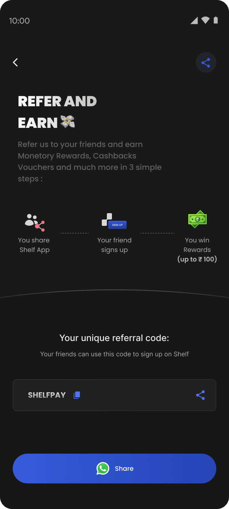
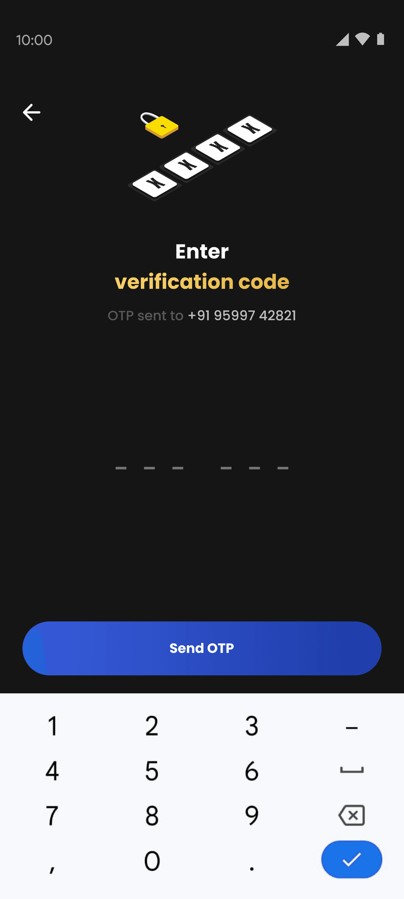

hesitate to remind friends to pay them back, leaving debts unresolved
SHELFPAY.
Rebuilding how groups handle shared money — in real time.
Read the case study ↓
0 → 5K
USERS
USERS
30+
PROTOTYPES
PROTOTYPES
YC
S22
S22
80%Day-1 retention
5KUsers, 6 months
60%Payment completion lift
30+Prototypes tested
01
THE BRIEF
FIRST DESIGNER
IN THE DOOR.
Shelfpay (YC S22) had a live product, a clear vision, and a founding team with strong technical conviction. What it didn’t have was a designer. I joined to change that.
The mandate from day one was simple and total: own the entire surface of the product, and the brand around it.
Y Combinator S22 · First & only designerEVERYTHING I OWNED
- 01Product Designapp, flows, UI
- 02Design Systemtokens, components
- 03Brand Identitylogo, voice, visual
- 04Prototyping30+ tested builds
- 05User Researchcalls, field tests
- 06Onboardingfirst-run & growth
- 07Marketing & Outreachsocial, campaigns
02
THE PROBLEM
THE REAL PROBLEM WASN’T SPLITTING.
IT WAS SETTLING.
When people live together, travel, or share recurring costs, one person pays and the rest promise to settle. That promise quietly turns into a loop nobody enjoys — and existing apps were solving the math, not the awkwardness.
THE AWKWARD MONEY LOOP
- 01Someone pays
Picks up the whole bill
- 02“I’ll settle later”
Everyone agrees, easily
- 03Days slip by
Nobody actually moves
- 04Now it’s awkward
Too weird to bring up
- 05So it’s dropped
Debt + quiet resentment
Next dinner, next trip — the same loop starts over.
The friction wasn’t awareness, and it wasn’t access to payments. It was social discomfort. Solve the awkwardness and the money follows.
03
RESEARCH
THE DATA MADE
IT UNDENIABLE.
Surveys and interviews with people who split costs regularly kept returning the same signal: the breakdown happens at repayment, not tracking.
average unresolved balance for urban millennials sharing a home
groups abandon expense apps within two months over repayment awkwardness
said simpler repayment would rebuild trust and willingness to split again
“I’d rather lose the ₹400 than be the person who keeps asking for it.”
— recurring sentiment across interviews
04
COMPETITIVE ANALYSIS
WHAT THE MARKET DID —
AND WHERE IT STOPPED.
Most people already lived in Splitwise, Paytm Split, or WhatsApp Pay. The gap wasn’t features — it was structural. Every tool either logged money or moved it, but none held it as a group.
Shelfpay was the missing group-wallet layer — groups pre-fund a shared balance and payments auto-settle in real time. No follow-ups. No reminders.
| PRODUCT | GROUP WALLET | REAL-TIME | UPI | FLEX SPLIT | LOG ONLY |
|---|---|---|---|---|---|
| SHELF ✦ | ✓ | ✓ | ✓ | ✓ | × |
| SPLITWISE | × | × | × | ✓ | ✓ |
| PAYTM SPLIT | × | ✓ | ✓ | × | × |
| WHATSAPP PAY | × | ✓ | ✓ | × | × |
Only Shelfpay combined a shared group balance with real-time, UPI-native, flexible settlement — the structural gap every competitor left open.
05
THE ECOSYSTEM
DESIGNING THE ECOSYSTEM,
NOT JUST THE INTERFACE.
Before opening Figma, I mapped the full product space. Shelfpay was six distinct workstreams, all owned by one designer.
Core Features
Group Wallet
Pool Money
Split Payment
Data & Analytics
Mixpanel Integration
Behaviour Tracking
Drop-off Analysis
User Research & Testing
Field Testing
Bi-weekly User Calls
Persona Development
Mobile App Design
Modern
Easy to Use
Intuitive
Design System
Custom UI Components
Brand Colours
Design Tokens
Branding & Marketing
Social & Website
Physical Campaigns
User Outreach
06
WHAT USERS TOLD US
FOUR THEMES.
EVERY SINGLE SESSION.
Through interviews and usability sessions, these patterns were consistent regardless of who we spoke to.
Asking for money back felt uncomfortable
The discomfort of the reminder was worse than the money lost — users let it go, and resentment quietly built instead.
“Expensing” apps rarely led to actual transfers
Adding expenses was easy. The final step — actually paying — required someone to break the social tension. It rarely happened.
Payment flows needed to feel social
Users wanted payment to feel like part of the group conversation — private, flexible, immediate. Not a formal financial transaction.
Tracking wasn’t enough — they wanted settlement
Seeing who owes what didn’t reduce the friction of collecting it. Users wanted the money to move automatically. One step, not a process.
07
USER PERSONA
WHO WE WERE REALLY
DESIGNING FOR.
Rohan Mehta
24 · Bengaluru · Shares a 3BHK with 3 friends
- ROLE
- SDE at a startup
- SPLITS WITH
- Flatmates + trips
- PAYS VIA
- UPI, daily
“I’d rather eat the ₹400 than text my friend to pay me back. Again.”
Goals
- Settle up without the awkward reminder
- Keep group money fair without doing the math
- Pay in the same flow he already lives in
Frustrations
- Chasing flatmates for small amounts
- Expense apps that track but never settle
- Quiet resentment when debts pile up
Behaviours
- Pays for the group, settles later (or never)
- Lives in UPI apps and group chats
- Avoids confrontation over money
Needs
- Money that moves automatically
- Settling that feels social, not formal
- Zero reminders, zero awkwardness
08
THE PRODUCT BEFORE I STEPPED IN
CORE FUNCTIONALITY EXISTED.
THE EXPERIENCE WAS FRAGMENTED.
Groups, splits, balance tracking — all there. But no hierarchy. Inconsistent patterns. Visual language that changed screen to screen. No design system.




“In usability sessions, I noticed hesitation before every primary action. That pause is expensive in fintech.”
- Flows required too much cognitive effort
- Important actions weren’t visually prioritized
- States weren’t clearly differentiated
- No system-level coherence
- Patterns relearned on every screen
- Hesitation before every primary action
09
WHAT I CHANGED FIRST
THREE DECISIONS THAT
SHAPED EVERYTHING.
INSTEAD OF
Designing screens independently
Building each screen without a shared foundation and patching inconsistencies after.
I CHOSE
Design system before any screen
Color tokens, typography, spacing, interaction states — all defined first. Visual consistency is a trust signal in fintech. Every screen felt like the same product from day one.
INSTEAD OF
Covering every screen at once
Sprinting to design all 100+ screens to hit scope coverage quickly.
I CHOSE
Core flows first — validated by prototypes
Group creation, wallet funding, expense split, real-time adjustment. 15+ prototypes. Prototype 11 became the product. Killing 10 first is how you know 11 is right.
INSTEAD OF
Just designing the app
Scoping work to mobile UI and handing off files to engineering.
I CHOSE
Owning the full product surface
Brand, system, onboarding, marketing, product — one coherent thing. A product that looks like itself at every touchpoint builds trust faster than one that switches visual language between the ad and the app.
10
THE SHIPPED PRODUCT
100+ SCREENS. 6 MONTHS.
ONE DESIGNER.




Home & Wallet
Opens on balance and group access — what a user needs the moment they open the app. Primary action always visible without scrolling.
Split & Pay
Split equally, by amount, or by share — all within the same screen as confirmation. No context switches.
Transaction History
Every transaction shows initiator, share, and settlement status. No ambiguity. No reason to chase anyone.
ONE COHERENT PRODUCT
Brand, system, onboarding, marketing, product — one coherent thing.

11
REFLECTION
WHAT I LEARNEDDOING THIS.
Map before you build
Taking a week to map the full product space felt slow. It saved weeks. Every screen was faster to design because the system was already defined.
In fintech, perception is the product
Users don’t analyze whether the interface is well-designed. They feel whether it’s trustworthy. That feeling is built through every micro-decision, simultaneously.
Kill prototypes fast
Prototype 11 became the product. The other 10 weren’t waste — they were how we knew 11 was right. Test assumptions cheaply. Kill them faster than you build them.
12
OUTCOME
0 TO 5,000 USERS.
SIX MONTHS.
Day-1 retention at launch
Lift in payment completion rate
User satisfaction score
Screens designed across the full product
Back to the portfolio
See selected work →